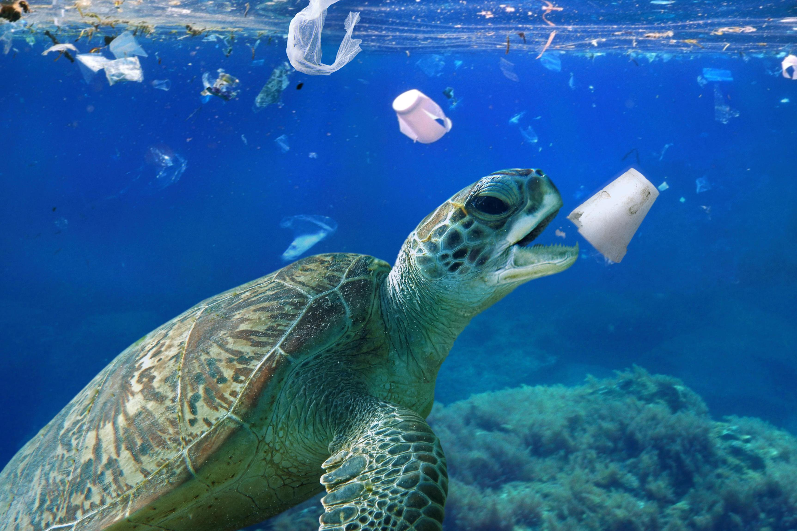
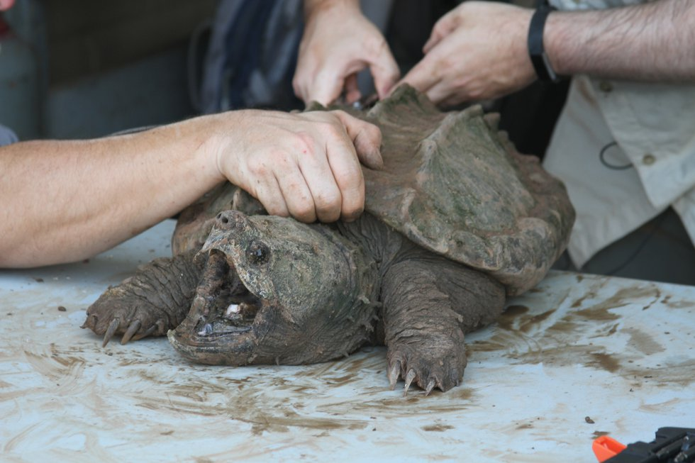

Threats to Turtles
Pollution
Pollution is a major threat to the turtle population as it affects their nesting habitats and food sources. Oil spills and plastic waste can also entangle and suffocate turtles, causing injuries or death. To prevent pollution, we can reduce our use of plastic, properly dispose of waste, and support organizations that clean up beaches and oceans.
Learn more about pollution solutions and conservation efforts.Predation

Natural predators like birds, crabs, and raccoons can eat turtle eggs and hatchlings, reducing the number of turtles that survive to adulthood. Humans can also contribute to predation by poaching turtles or destroying their nests. To prevent predation, we can protect nesting sites, educate communities about the importance of turtle conservation, and support efforts to reduce poaching.
Learn more about predation solutions and conservation efforts.Climate Change
Climate change affects turtles in several ways, including changes in temperature and sea level, changes in food sources, and the increased frequency and intensity of storms. These changes can impact turtle nesting and migration patterns, as well as their ability to find food and mate. To prevent the effects of climate change on turtles, we can reduce our carbon footprint, support renewable energy sources, and advocate for policies that address climate change.
Learn more about climate change solutions and conservation efforts.Illegal Trade
Turtles and their products are illegally traded for their meat, shells, and eggs. This trade is a significant threat to turtle populations, as it can result in overexploitation and habitat destruction. To prevent illegal trade, we can support organizations that work to stop poaching and trafficking, and educate others about the harms of buying or selling turtle products.
Learn more about illegal trade and conservation efforts.Habitat Loss
Habitat loss is a major threat to turtle populations, as it can disrupt nesting habitats and food sources. Coastal development, beach erosion, and destruction of coral reefs are all factors that contribute to habitat loss. To prevent habitat loss, we can support conservation efforts to protect and restore turtle habitats, and advocate for policies that prioritize conservation over development.
Learn more about habitat loss and conservation efforts.